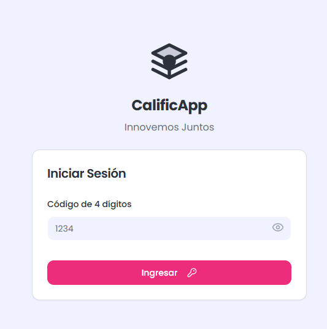
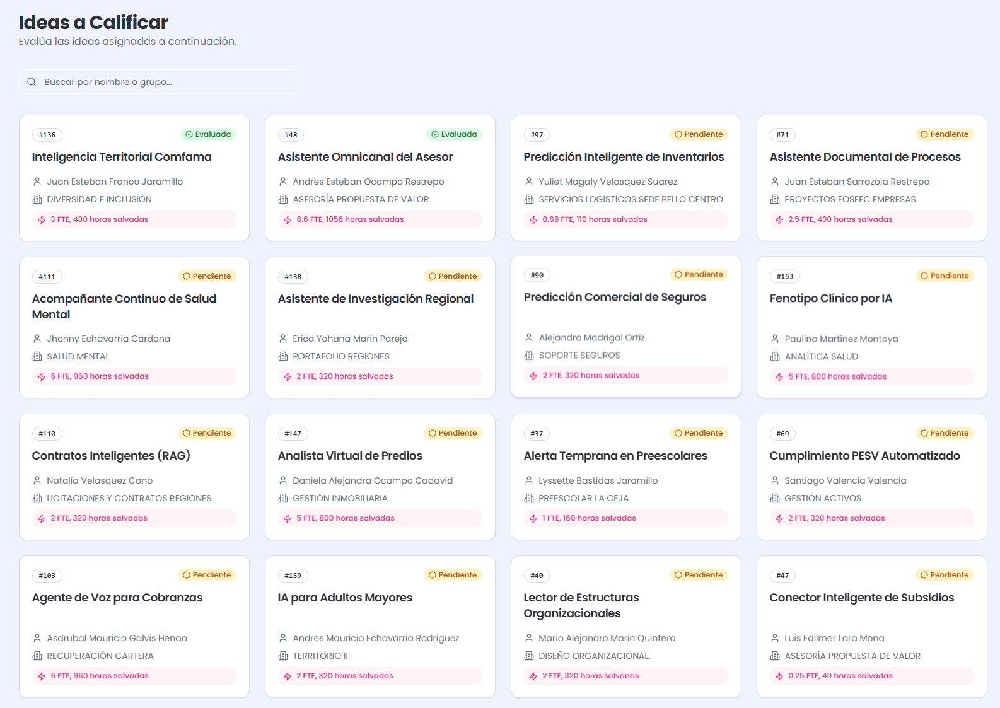
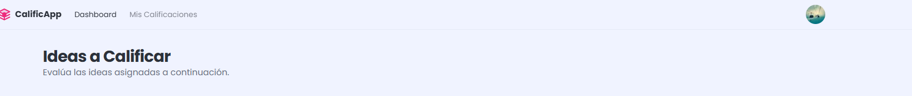
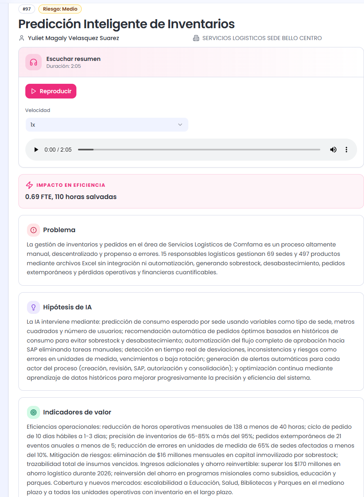
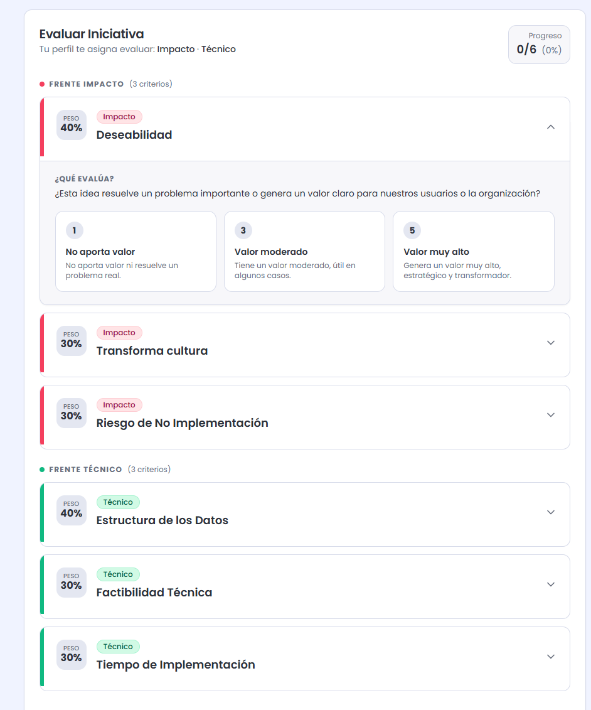
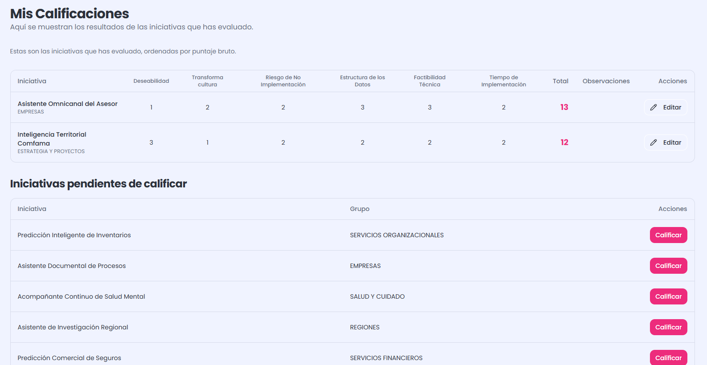
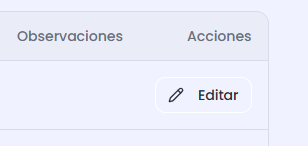

Contenido
- Bienvenida y resumen del proceso
- Ingreso a la plataforma
- Visualización de iniciativas
- Detalle de una iniciativa
- Cómo calificar una iniciativa
- Ver y editar tus calificaciones
- Preguntas frecuentes
1Bienvenida
Gracias por ser parte del comité de jurados. Como jurado, tu rol es
evaluar las iniciativas que te fueron asignadas a través
de criterios objetivos agrupados por frentes (Estrategia, Impacto,
Innovación, Técnico).
Resumen del proceso
- Ingresas a la plataforma con tu código de acceso de 4 dígitos.
- Ves las iniciativas asignadas en el dashboard.
- Abres una iniciativa, lees su descripción (o la escuchas en audio).
- La calificas por cada criterio del/los frente(s) que te corresponden.
- Tus calificaciones quedan guardadas y puedes editarlas hasta el cierre.
¿Qué son los "frentes"?
Son las dimensiones de evaluación. Cada jurado tiene asignados uno o
varios frentes según su área de expertise. Solo verás y podrás calificar
los criterios de tus frentes asignados.
2Ingreso a la plataforma
Para acceder solo necesitas tu código de 4 dígitos.
Paso a paso
- Abre la URL de la plataforma en tu navegador (Chrome, Edge o Firefox recomendado).
- Verás la pantalla de inicio de sesión.
- Escribe tu código de acceso de 4 dígitos en el campo.
- Presiona Ingresar.

Figura 2.1 — Pantalla de login con campo de código de 4 dígitos.
¿No tienes código?
Solicítalo al organizador del evento. Cada jurado recibe un código
único por correo electrónico antes del inicio de la jornada.
3Visualización de iniciativas
Después del login llegas al Dashboard: tu vista principal.
Qué ves en el dashboard
- Título "Ideas a Calificar" y una breve indicación.
- Cada iniciativa aparece como una tarjeta con: nombre, grupo/área, postulante y código (#).
- Las iniciativas que ya calificaste aparecen marcadas.

Figura 3.1 — Dashboard del jurado mostrando iniciativas activas a calificar.
Navegación principal
En la barra superior tienes acceso a:
- Dashboard / Inicio — vuelve al listado de iniciativas.
- Mis Calificaciones — ver y editar lo que ya calificaste.
- Perfil (esquina superior derecha) — tu nombre, tu rol en la organización, tu rol en la plataforma, y la opción de Cerrar sesión.

Figura 3.2 — Menú de usuario con datos de perfil y opción de cerrar sesión.
4Detalle de una iniciativa
Haz clic en la tarjeta de una iniciativa para ver su detalle completo.
Qué encontrarás
- Nombre de la solución y código (#).
- Postulante, grupo y área.
- Problema que resuelve.
- Hipótesis de IA (cómo aplica IA en la solución).
- Indicadores de valor esperados.
- Reproductor de audio — escucha un resumen de la iniciativa generado automáticamente. Útil si prefieres oír mientras revisas otras cosas.
- Formulario de calificación al final de la página.

Figura 4.1 — Vista de detalle de la iniciativa con descripción y audio podcast.
Tip: usa el audio
El reproductor te permite cambiar la velocidad (0.75×, 1×, 1.25×, 1.5×).
Ideal para revisar varias iniciativas rápido.
5Cómo calificar una iniciativa
El formulario de calificación está en la parte inferior del detalle.
Estructura del formulario
Solo verás los criterios de los frentes que te fueron asignados. Los pesos por defecto son:
| Frente | Peso por defecto | Ejemplo de criterio |
|---|
| Estrategia | 25% | Alineación con objetivos del negocio |
| Impacto | 25% | Magnitud del beneficio esperado |
| Innovación | 20% | Originalidad de la solución |
| Técnico | 30% | Viabilidad de implementación |
Paso a paso
- Por cada criterio, selecciona el nivel que mejor describe la iniciativa (1 a 5, donde 5 es el mejor).
- Lee la descripción de cada nivel para elegir con criterio. No selecciones a la ligera.
- Opcionalmente escribe observaciones (máximo 500 caracteres) — útiles para el organizador.
- Haz clic en Enviar calificación.
- Vuelves al dashboard. La iniciativa quedará marcada como Calificada.

Figura 5.1 — Formulario de calificación con criterios y niveles.
Antes de enviar
Asegúrate de haber calificado todos los criterios de tus frentes
asignados. Si dejas alguno sin seleccionar, no podrás enviar.
¿Cómo se calculan los puntajes?
Cada nivel tiene un valor (1–5). El sistema multiplica tu puntaje por
el peso del criterio y por el peso del frente.
Eso genera un puntaje ponderado que el organizador usa para el ranking final.
6Ver y editar tus calificaciones
Puedes revisar y modificar lo que calificaste hasta el cierre del proceso.
Cómo llegar
- En la barra superior, haz clic en "Mis Calificaciones".
- Verás una tabla con todas las iniciativas que has evaluado, ordenadas por puntaje bruto.

Figura 6.1 — Tabla "Mis Calificaciones" con resumen por iniciativa.
Editar una calificación
- En la tabla, haz clic en el botón de lápiz (editar) de la fila que quieres editar.
- Volverás al detalle de la iniciativa con tus respuestas precargadas.
- Modifica lo que necesites.
- Vuelve a hacer clic en Enviar calificación para guardar.
¿Hasta cuándo puedo editar?
Hasta que el organizador cierre la jornada de calificación.
Después de eso, las respuestas quedan congeladas para el cálculo final.

Figura 6.2 — Formulario de edición con respuestas anteriores precargadas.
7Preguntas frecuentes
¿Qué hago si olvidé mi código?
Contacta al organizador para que te lo reenvíe o regenere uno nuevo.
¿Por qué no veo todos los criterios?
Solo ves los criterios de los frentes que te fueron asignados. Si crees
que falta alguno, verifica con el organizador.
¿La sesión expira?
Sí, cada sesión dura 24 horas. Después de ese tiempo
deberás iniciar sesión de nuevo con tu código.
¿Puedo calificar desde el celular?
Sí. La plataforma es responsive y funciona en cualquier dispositivo
moderno (recomendamos Chrome o Safari).
¿Qué hago si el audio no carga?
Es posible que el organizador todavía no lo haya generado para esa
iniciativa. Puedes leer la descripción escrita normalmente.